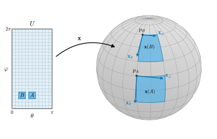
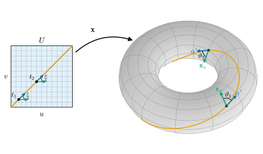

7.1 제1기본형식
이 절의 목표
- 제1기본형식을 정의하고, 매개화에서 계수 \(E, F, G\)를 계산하며, 그것이 기저 \((\mathbf{x}_u, \mathbf{x}_v)\)의 그람 행렬임을 설명할 수 있다.
- 매개화를 바꿀 때 \(E, F, G\)가 어떻게 변하는지 유도하고, 그래도 제1기본형식 자체는 변하지 않음을 설명할 수 있다.
- 곡면 위 곡선의 길이와 두 곡선이 이루는 각을 \(E, F, G\)로 계산할 수 있다.
- 구면, 원기둥, 원환면, 회전면의 \(E, F, G\)를 구하고 그 기하적 뜻을 읽을 수 있다.
선수 지식
동기
6장에서 정칙곡면을 정의하고, 각 점에 접평면 \(T_pS\)를 세우고, 곡면 위의 함수와 사상을 미분했다. 6장은 “곡면 위에서 길이, 각, 넓이는 어떻게 재는가?”라는 질문을 남겼다(6.5절의 예고). 곡면 위의 곡선 \(\alpha\)는 \(\R^3\)의 곡선이기도 하므로 길이는 정의 4.2.7대로 \(\int\abs{\alpha'(t)}\,dt\)다. 새로 정의할 것은 없다. 문제는 계산이다.
곡면 위의 곡선은 대개 좌표로 주어진다. 비행기의 항로는 위도와 경도의 변화 \(\big(\theta(t), \varphi(t)\big)\)로 적고, 곡선을 \(\alpha(t) = \mathbf{x}\big(u(t), v(t)\big)\)로 쓴다. 그러면 (6.2.1)에서 \(\alpha' = u'\,\mathbf{x}_u + v'\,\mathbf{x}_v\)이고
\[ \abs{\alpha'}^2 = \inner{\mathbf{x}_u}{\mathbf{x}_u}\,(u')^2 + 2\inner{\mathbf{x}_u}{\mathbf{x}_v}\,u'v' + \inner{\mathbf{x}_v}{\mathbf{x}_v}\,(v')^2 \]
이다. 좌표의 속도 \((u', v')\)를 실제 속력으로 바꾸는 데 필요한 것은 각 점에서의 세 수 \(\inner{\mathbf{x}_u}{\mathbf{x}_u}\), \(\inner{\mathbf{x}_u}{\mathbf{x}_v}\), \(\inner{\mathbf{x}_v}{\mathbf{x}_v}\)뿐이다. 지도로 치면 “이 칸에서 가로 1눈금은 실제로 몇 km이고 가로와 세로는 몇 도로 만나는가”를 적은 환산표다. 이 절은 이 환산표 뒤에 있는 대상, 곧 접평면 위의 내적을 정의하고 기준 예제에서 환산표를 계산한다.
이 환산표에는 중요한 뜻이 하나 더 있다. 곡면 위에 사는 존재가 \(\R^3\)을 전혀 모른 채 좌표와 환산표만 가지고 있어도 길이와 각을 잴 수 있다는 것이다. 곡면의 성질 가운데 무엇이 환산표만으로 결정되는가는 9장의 빼어난 정리로 이어지는 질문이다.

정의
곡면 위에서 길이와 각을 재려면 각 접평면에 내적이 있어야 한다. 가장 자연스러운 방법은 \(\R^3\)의 내적을 접평면 \(T_pS\)로 제한하는 것이다. \(T_pS\)는 \(\R^3\)의 부분공간이므로(명제 6.2.4), 내적의 세 조건(쌍선형, 대칭, 양의 정부호, 정의 1.5.1)은 제한해도 그대로 성립한다.
정의 7.1.1 (제1기본형식, first fundamental form). \(S\)가 정칙곡면이고 \(p \in S\)라 하자. \(\R^3\)의 내적을 \(T_pS\)로 제한한 내적을 \(\inner{w_1}{w_2}_p = \inner{w_1}{w_2}\) (\(w_1, w_2 \in T_pS\))로 쓴다. 이차형식
\[ \mathrm{I}_p\colon T_pS \to \R, \qquad \mathrm{I}_p(w) = \inner{w}{w}_p = \abs{w}^2 \]
을 \(p\)에서 \(S\)의 제1기본형식(first fundamental form)이라 한다.
정의에는 매개화가 전혀 쓰이지 않았다. 따라서 \(\mathrm{I}_p\)는 곡면 자체에 속한 대상이다. 또 \(\mathrm{I}_p\)와 내적 \(\inner{\cdot}{\cdot}_p\)는 서로를 결정한다. 한쪽 방향은 정의이고, 반대 방향은 쌍선형성과 대칭성에서 나오는 편극 등식
\[ \inner{w_1}{w_2}_p = \tfrac12\big(\mathrm{I}_p(w_1 + w_2) - \mathrm{I}_p(w_1) - \mathrm{I}_p(w_2)\big) \]
이다(우변을 전개하면 \(\tfrac12(2\inner{w_1}{w_2})\)가 남는다). 그래서 앞으로 “제1기본형식”이라고 하면 이차형식 \(\mathrm{I}_p\)와 내적 \(\inner{\cdot}{\cdot}_p\)를 구별하지 않고 쓴다.
계산할 때는 매개화 \(\mathbf{x}\colon U \to S\)로 좌표 표현을 얻는다. \(q \in U\), \(p = \mathbf{x}(q)\)라 하자. \(w \in T_pS\)는 \(w = a\,\mathbf{x}_u + b\,\mathbf{x}_v\) 꼴로 유일하게 쓸 수 있다(명제 6.2.4). 내적의 쌍선형성과 대칭성에 의해 \(\inner{w}{w} = a^2\inner{\mathbf{x}_u}{\mathbf{x}_u} + ab\inner{\mathbf{x}_u}{\mathbf{x}_v} + ba\inner{\mathbf{x}_v}{\mathbf{x}_u} + b^2\inner{\mathbf{x}_v}{\mathbf{x}_v}\)이므로
이다. 여기서 \(E, F, G\)는 \(q = \mathbf{x}^{-1}(p)\)에서 계산한 값이다. \(q\)를 \(U\) 전체에서 움직이면 \(E, F, G\)는 \(U\) 위의 함수가 되고, \(\mathbf{x}\)의 편미분의 곱의 합이므로 매끄럽다. 이 세 함수를 매개화 \(\mathbf{x}\)에 대한 제1기본형식의 계수라 부른다. 두 벡터 \(w_i = a_i\,\mathbf{x}_u + b_i\,\mathbf{x}_v\) (\(i = 1, 2\))의 내적도 같은 방식으로 전개하면
이다. 가운데 행렬은 기저 \((\mathbf{x}_u, \mathbf{x}_v)\)에 대한 내적 \(\inner{\cdot}{\cdot}_p\)의 그람 행렬(정의 1.5.12)이고, (1.5.5)가 바로 이 식이다. 그람 행렬은 양의 정부호이므로(명제 1.5.13(a)) \(E = \mathrm{I}(\mathbf{x}_u) \gt 0\), \(G \gt 0\)이다. 행렬식은 정리 1.6.16(d)에서
이다. 마지막 부등호는 매개화의 조건 (3)(정의 6.1.1)의 (3b)다. 이 값은 7.3절에서 넓이를 잴 때 다시 나온다.
기준 예제의 \(E, F, G\)
처음 하는 계산이므로 구면은 모든 단계를 쓴다. 두 벡터의 그람 행렬은 연습 1.5.2에서 미리 해 보았다. 여기서는 그 결과를 가정하지 않고 다시 계산한다.
예 7.1.2 (구면). 반지름 \(r\)인 구면의 기준 매개화(식 (6.1.4))
\[ \mathbf{x}(\theta, \varphi) = (r\sin\theta\cos\varphi,\ r\sin\theta\sin\varphi,\ r\cos\theta), \qquad 0 \lt \theta \lt \pi,\quad 0 \lt \varphi \lt 2\pi \]
를 쓰자. 편미분은(예 6.1.7)
\[ \begin{aligned} \mathbf{x}_\theta &= (r\cos\theta\cos\varphi,\ r\cos\theta\sin\varphi,\ -r\sin\theta),\\ \mathbf{x}_\varphi &= (-r\sin\theta\sin\varphi,\ r\sin\theta\cos\varphi,\ 0) \end{aligned} \]
이다. 성분끼리 곱해 더하면
\[ \begin{aligned} E &= r^2\cos^2\theta\,(\cos^2\varphi + \sin^2\varphi) + r^2\sin^2\theta = r^2,\\ F &= -r^2\sin\theta\cos\theta\sin\varphi\cos\varphi + r^2\sin\theta\cos\theta\sin\varphi\cos\varphi + 0 = 0,\\ G &= r^2\sin^2\theta\,(\sin^2\varphi + \cos^2\varphi) + 0 = r^2\sin^2\theta \end{aligned} \]
이다. \(E = r^2\)는 경선(\(\varphi\) 고정)을 따라 \(\theta\)가 \(\Delta\theta\)만큼 변할 때 실제로 약 \(r\,\Delta\theta\)만큼 움직인다는 뜻이다. \(G = r^2\sin^2\theta\)는 위도원(\(\theta\) 고정)의 반지름이 \(r\sin\theta\)라는 사실을 반영한다. \(F = 0\)은 경선과 위도원이 직각으로 만난다는 뜻이다((7.1.7)). 따라서 \(w = a\,\mathbf{x}_\theta + b\,\mathbf{x}_\varphi\)이면 \(\abs{w}^2 = r^2a^2 + r^2\sin^2\theta\,b^2\)이고, \(EG - F^2 = r^4\sin^2\theta\)는 식 (6.1.5)의 \(\abs{\mathbf{x}_\theta \times \mathbf{x}_\varphi}^2\)과 같다(그림 7.1.1).
검증: verify/v-7-1-first-fundamental-form.py
매개화의 조건 (3)이 왜 필요했는지가 (7.1.3)에서 보인다. 조건을 어기는 사상으로 “계수”를 계산하면 환산표가 망가진다.
비예 7.1.3 (조건 (3)이 없으면 좌표로 길이를 잴 수 없다). 6.1절의 흔한 오해 상자의 사상 \(\tilde{\mathbf{x}}(u, v) = (u^3, v, 0)\)은 매끄럽고 평면 \(\{z = 0\}\) 위로의 위상동형사상이지만 조건 (3)을 어긴다. \(\tilde{\mathbf{x}}_u = (3u^2, 0, 0)\), \(\tilde{\mathbf{x}}_v = (0, 1, 0)\)이므로 \(\inner{\tilde{\mathbf{x}}_u}{\tilde{\mathbf{x}}_u} = 9u^4\), \(\inner{\tilde{\mathbf{x}}_u}{\tilde{\mathbf{x}}_v} = 0\), \(\inner{\tilde{\mathbf{x}}_v}{\tilde{\mathbf{x}}_v} = 1\)이다. \(u = 0\)에서 행렬 \(\begin{pmatrix} 0 & 0 \\ 0 & 1 \end{pmatrix}\)은 양의 정부호가 아니다. 좌표 속도 \((1, 0)\)으로 움직이는 곡선 \(t \mapsto \tilde{\mathbf{x}}(t, 0) = (t^3, 0, 0)\)은 \(t = 0\)에서 속력이 \(0\)이다. 즉 “좌표가 움직이는데 점은 멈춘” 순간이 생긴다. 일반적으로 매끄러운 사상 \(\mathbf{x}\)에 대해 \(\inner{\mathbf{x}_u}{\mathbf{x}_u}\inner{\mathbf{x}_v}{\mathbf{x}_v} - \inner{\mathbf{x}_u}{\mathbf{x}_v}^2 = \abs{\mathbf{x}_u \times \mathbf{x}_v}^2 \ge 0\)이고, 등호는 \(\mathbf{x}_u, \mathbf{x}_v\)가 일차종속일 때만 성립한다(정리 1.6.16(c), (d)). 그러므로 조건 (3)은 “좌표 표현 (7.1.2)의 행렬이 모든 점에서 양의 정부호”라는 조건과 같다.
검증: verify/v-7-1-first-fundamental-form.py
나머지 기준 예제는 6.5절에서 편미분과 외적을 이미 구했으므로 그것을 인용해 내적만 계산한다.
예 7.1.4 (원기둥). 반지름 \(r\)인 원기둥의 기준 매개화 \(\mathbf{x}(u, v) = (r\cos u,\ r\sin u,\ v)\), \(U = (0, 2\pi) \times \R\)(예 6.5.7)에서 \(\mathbf{x}_u = (-r\sin u,\ r\cos u,\ 0)\), \(\mathbf{x}_v = (0, 0, 1)\)이므로
\[ E = r^2\sin^2 u + r^2\cos^2 u = r^2, \qquad F = 0 + 0 + 0 = 0, \qquad G = 1 \]
이다. 세 계수가 모두 상수다. 가로(\(u\)) 1눈금은 어디서나 실제 길이 \(r\), 세로(\(v\)) 1눈금은 어디서나 \(1\)이고, 두 방향은 늘 직교한다. 평면을 \(\mathbf{y}(u, v) = (ru, v, 0)\)으로 매개화해도 \(\mathbf{y}_u = (r, 0, 0)\), \(\mathbf{y}_v = (0, 1, 0)\)이므로 똑같이 \(E = r^2\), \(F = 0\), \(G = 1\)이다. 원기둥과 평면은 서로 다른 곡면이지만 이 좌표에서는 환산표가 같다. 이 관찰이 7.2절의 출발점이다.
검증: verify/v-7-1-first-fundamental-form.py
예 7.1.5 (원환면). \(0 \lt r \lt R\)이고 \(\mathbf{x}(u, v) = \big((R + r\cos u)\cos v,\ (R + r\cos u)\sin v,\ r\sin u\big)\)(예 6.5.8)이라 하자. 거기서 구한 편미분
\[ \begin{aligned} \mathbf{x}_u &= (-r\sin u\cos v,\ -r\sin u\sin v,\ r\cos u),\\ \mathbf{x}_v &= \big(-(R + r\cos u)\sin v,\ (R + r\cos u)\cos v,\ 0\big) \end{aligned} \]
로 내적을 계산하면
\[ \begin{aligned} E &= r^2\sin^2 u\,(\cos^2 v + \sin^2 v) + r^2\cos^2 u = r^2,\\ F &= r(R + r\cos u)\sin u\cos v\sin v\\ &\quad - r(R + r\cos u)\sin u\sin v\cos v + 0 = 0,\\ G &= (R + r\cos u)^2(\sin^2 v + \cos^2 v) + 0 = (R + r\cos u)^2 \end{aligned} \]
이다. \(E = r^2\)는 관의 단면인 반지름 \(r\)인 원(경선, \(v\) 고정)을 따라 움직일 때의 환산이고, \(G = (R + r\cos u)^2\)는 반지름 \(R + r\cos u\)인 수평 원(위도원, \(u\) 고정)을 따라 움직일 때의 환산이다. \(G\)는 바깥쪽 적도(\(u = 0\))에서 가장 크고(\((R + r)^2\)) 안쪽 적도(\(u = \pi\))에서 가장 작다(\((R - r)^2\)). \(EG - F^2 = r^2(R + r\cos u)^2\)은 식 (6.5.4)의 \(\abs{\mathbf{x}_u \times \mathbf{x}_v}^2\)과 같다. (연습 2.5.1에서 이 매개화의 계수가 \(2\)임을 미리 보았다.)
검증: verify/v-7-1-first-fundamental-form.py
구면(두 극을 뺀 것), 원기둥, 원환면은 모두 회전면이다(예 6.5.11). 셋의 공통점 \(F = 0\)을 한 번에 설명하자.
예 7.1.6 (회전면). 생성곡선 \(\alpha(u) = (\rho(u), z(u))\) (\(\rho \gt 0\))의 회전면의 매개화 \(\mathbf{x}(u, v) = \big(\rho(u)\cos v,\ \rho(u)\sin v,\ z(u)\big)\)(식 (6.5.5))에서 \(\mathbf{x}_u = (\rho'\cos v,\ \rho'\sin v,\ z')\), \(\mathbf{x}_v = (-\rho\sin v,\ \rho\cos v,\ 0)\)이다(명제 6.5.10의 증명). 따라서
이다. \(F = 0\)은 6.5절에서 이미 보았던 “생성곡선과 수평 원은 늘 직교한다”는 사실이다. \(E\)는 생성곡선의 속력의 제곱이고 \(G\)는 회전 반지름의 제곱이다.
- (a) 구면: \(\alpha(\theta) = (r\sin\theta,\ r\cos\theta)\)이면 \(E = r^2\cos^2\theta + r^2\sin^2\theta = r^2\), \(G = r^2\sin^2\theta\)로 예 7.1.2와 같다.
- (b) 원환면: \(\alpha(u) = (R + r\cos u,\ r\sin u)\)이면 \(E = r^2\sin^2 u + r^2\cos^2 u = r^2\), \(G = (R + r\cos u)^2\)로 예 7.1.5와 같다.
- (c) 원기둥: \(\alpha(u) = (r, u)\)이면 \(E = 1\), \(G = r^2\)이다. 예 7.1.4와 \(E, G\)가 바뀐 것은 두 매개화에서 변수의 이름이 바뀌었기 때문이다(예 6.5.11(b)).
- (d) 현수면: \(\alpha(u) = (\cosh u,\ u)\)이면 \(E = \sinh^2 u + 1 = \cosh^2 u\), \(G = \cosh^2 u\)이다. 이 매개화에서는 \(E = G\)이고 \(F = 0\)이다. 이런 매개화는 7.4절에서 특별한 이름을 얻는다.
검증: verify/v-7-1-first-fundamental-form.py
매개화를 바꾸면
같은 점을 두 매개화로 나타내면 \(E, F, G\)는 다르다. 그러나 둘 다 같은 \(\mathrm{I}_p\)의 좌표 표현이므로 둘 사이에는 정해진 관계가 있어야 한다. 그 관계는 명제 6.3.4(기저의 변환)와 명제 1.5.13(c)(그람 행렬의 변환)를 합친 것이다.
명제 7.1.7 (매개화를 바꿀 때 계수의 변환). \(\mathbf{x}\colon U \to S\)와 \(\mathbf{y}\colon \bar U \to S\)가 매개화이고 \(W = \mathbf{x}(U) \cap \mathbf{y}(\bar U) \neq \varnothing\)이며, \(h = \mathbf{x}^{-1} \circ \mathbf{y}\colon \mathbf{y}^{-1}(W) \to \mathbf{x}^{-1}(W)\)가 매개변수 변환(정리 6.3.1)이라 하자. \(\mathbf{x}\)의 계수를 \(E, F, G\), \(\mathbf{y}\)의 계수를 \(\bar E, \bar F, \bar G\)라 하면, 모든 \(\bar q \in \mathbf{y}^{-1}(W)\)에서
이다. 또 \(w \in T_pS\)의 두 좌표 성분 \((a, b)\), \((\bar a, \bar b)\)로 계산한 \(E a^2 + 2Fab + G b^2\)와 \(\bar E\bar a^2 + 2\bar F\bar a\bar b + \bar G\bar b^2\)은 같다.
이 명제가 말하는 것. 계수 행렬은 아래첨자가 둘인 양처럼 야코비 행렬 두 개로 변하고, 성분은 야코비 행렬 하나로 반대로 변한다. 둘이 상쇄되어 \(\mathrm{I}_p(w)\)의 값은 매개화에 무관하다.
증명. \(p = \mathbf{y}(\bar q)\), \(q = h(\bar q)\)라 하자. (6.3.5)는 새 기저 \((\mathbf{y}_{\bar u}, \mathbf{y}_{\bar v})\)를 옛 기저 \((\mathbf{x}_u, \mathbf{x}_v)\)로 나타낸 것이고, 그 기저변환 행렬(정의 1.4.1)은 \(B = Dh(\bar q)\)이다. (7.1.2)에서 보았듯이 두 계수 행렬은 같은 내적 \(\inner{\cdot}{\cdot}_p\)의 두 기저에 대한 그람 행렬이므로, 명제 1.5.13(c)에서 새 그람 행렬은 \(B^{\mathsf{T}}(\text{옛 그람 행렬})B\), 곧 (7.1.5)이다. 마지막 주장: (6.3.6)에서 \((a, b)^{\mathsf{T}} = B(\bar a, \bar b)^{\mathsf{T}}\)이므로
\[ \begin{pmatrix} \bar a & \bar b \end{pmatrix}B^{\mathsf{T}}\begin{pmatrix} E & F \\ F & G \end{pmatrix}B\begin{pmatrix} \bar a \\ \bar b \end{pmatrix} = \begin{pmatrix} a & b \end{pmatrix}\begin{pmatrix} E & F \\ F & G \end{pmatrix}\begin{pmatrix} a \\ b \end{pmatrix} \]
이다. 좌변은 (7.1.5)에 의해 \(\bar E\bar a^2 + 2\bar F\bar a\bar b + \bar G\bar b^2\)이다. (두 값이 모두 \(\abs{w}^2\)이라는 것은 정의에서 바로 보이지만, 계산 규칙이 서로 맞물린다는 것을 확인해 둔 것이다.)
예 7.1.8 (평면: 직교좌표와 극좌표). 평면 \(P = \{z = 0\}\)의 두 매개화 \(\iota(u, v) = (u, v, 0)\)과 \(\mathbf{y}(\rho, \varphi) = (\rho\cos\varphi,\ \rho\sin\varphi,\ 0)\) (\(\rho \gt 0\), \(0 \lt \varphi \lt 2\pi\))를 보자. \(\iota_u = e_1\), \(\iota_v = e_2\)이므로 \(\iota\)의 계수는 \(E = 1\), \(F = 0\), \(G = 1\)이다. \(\mathbf{y}_\rho = (\cos\varphi, \sin\varphi, 0)\), \(\mathbf{y}_\varphi = (-\rho\sin\varphi, \rho\cos\varphi, 0)\)이므로
\[ \bar E = \cos^2\varphi + \sin^2\varphi = 1, \qquad \bar F = -\rho\sin\varphi\cos\varphi + \rho\sin\varphi\cos\varphi = 0, \qquad \bar G = \rho^2 \]
이다(예 1.5.14(b)의 극좌표 기저의 그람 행렬과 같다). 매개변수 변환은 \(h(\rho, \varphi) = \iota^{-1}(\mathbf{y}(\rho, \varphi)) = (\rho\cos\varphi, \rho\sin\varphi)\)이고
\[ Dh^{\mathsf{T}}\,I_2\,Dh = \begin{pmatrix} \cos\varphi & \sin\varphi \\ -\rho\sin\varphi & \rho\cos\varphi \end{pmatrix}\begin{pmatrix} \cos\varphi & -\rho\sin\varphi \\ \sin\varphi & \rho\cos\varphi \end{pmatrix} = \begin{pmatrix} 1 & 0 \\ 0 & \rho^2 \end{pmatrix} \]
이므로 (7.1.5)가 확인된다. 같은 평면이 한 매개화에서는 \((1, 0, 1)\), 다른 매개화에서는 \((1, 0, \rho^2)\)를 계수로 가진다. 계수만 보고 “평면인가”를 판단할 수는 없다는 뜻이다.
검증: verify/v-7-1-first-fundamental-form.py
곡면 위 곡선의 길이
이제 동기의 계산을 정리로 적는다. 곡선의 길이의 정의는 정의 4.2.7 그대로이고, 새로운 것은 계산 공식뿐이다.
명제 7.1.9 (곡면 위 곡선의 길이). \(\mathbf{x}\colon U \to S\)가 매개화이고 \(\alpha\colon I \to \R^3\)이 \(\alpha(I) \subseteq \mathbf{x}(U)\)인 곡선이라 하자. 그러면 \(\beta = \mathbf{x}^{-1} \circ \alpha = \big(u(t), v(t)\big)\)는 매끄럽고, 모든 \(t \in I\)에서
\[ \abs{\alpha'(t)}^2 = E\,(u')^2 + 2F\,u'v' + G\,(v')^2 \]
이다(\(E, F, G\)는 \(\beta(t)\)에서, \(u', v'\)은 \(t\)에서 계산한다). 따라서 \([t_1, t_2] \subseteq I\)이면
이다.
증명. \(\beta\)가 매끄럽다는 것은 보조정리 6.2.3(\(k = 1\), \(\Phi = \alpha\))이다. \(t_0 \in I\)를 고정하고 \(\tilde\alpha(s) = \alpha(t_0 + s)\)를 \(0\) 근처에서 생각하면 명제 6.2.4(b)에 의해 \(\alpha'(t_0) = u'(t_0)\,\mathbf{x}_u + v'(t_0)\,\mathbf{x}_v\)이다(\(\mathbf{x}_u, \mathbf{x}_v\)는 \(\beta(t_0)\)에서). (7.1.1)에 \(a = u'(t_0)\), \(b = v'(t_0)\)를 넣으면 첫 식이고, 양변의 제곱근을 (4.2.4)에 넣으면 (7.1.6)이다.
(7.1.6)의 값은 매개화 \(\mathbf{x}\)에 무관하다. 좌변이 \(\int\abs{\alpha'}\)로 정의되어 있기 때문이다. 곡선 \(\alpha\)를 재매개화해도 길이는 그대로다(정리 4.3.6). 곡선이 매개화 하나의 상에 다 들어가지 않으면 구간을 나누어 조각마다 (7.1.6)을 쓰고 더한다.
예 7.1.10 (위도원, 경선, 원기둥 위의 나선). (a) 구면의 위도원 \(\alpha(t) = \mathbf{x}(\theta_0, t)\)는 \(u(t) = \theta_0\), \(v(t) = t\)이므로 \(u' = 0\), \(v' = 1\)이고 예 7.1.2에서 \(\abs{\alpha'} = \sqrt{G} = r\sin\theta_0\)이다. 한 바퀴(\(0 \lt t \lt 2\pi\), 빠진 한 점은 길이에 영향이 없다)의 길이는 \(2\pi r\sin\theta_0\)이다. 경선 \(\alpha(t) = \mathbf{x}(t, \varphi_0)\) (\(0 \lt t \lt \pi\))는 \(\abs{\alpha'} = \sqrt{E} = r\)이므로 길이가 \(\pi r\)이다.
(b) 원기둥 위의 곡선 \(\beta(t) = (t, bt)\) (\(b \neq 0\))의 상 \(\alpha(t) = \mathbf{x}(t, bt) = (r\cos t,\ r\sin t,\ bt)\)는 \(a = r\)인 기준 예제의 나선이다. 예 7.1.4의 \(E = r^2\), \(F = 0\), \(G = 1\)과 \(u' = 1\), \(v' = b\)에서
\[ \abs{\alpha'}^2 = r^2 \cdot 1^2 + 2 \cdot 0 \cdot 1 \cdot b + 1 \cdot b^2 = r^2 + b^2, \qquad L\big(\alpha|_{[0, 2\pi]}\big) = 2\pi\sqrt{r^2 + b^2} \]
이다. (4.2.6)의 값과 같다. 이번에는 나선의 식을 미분하지 않고 원기둥의 환산표만으로 얻었다. 환산표가 평면의 매개화 \((ru, v, 0)\)의 것과 같으므로(예 7.1.4) 나선의 길이는 평면 위 선분 \(t \mapsto (rt, bt, 0)\)의 길이와 같다. 그림 4.2.2의 “원기둥 펼치기”가 이 계산이다.
검증: verify/v-7-1-first-fundamental-form.py
두 곡선이 이루는 각
길이 다음은 각이다. 두 벡터 사이의 각은 따름정리 1.5.6(c)에서 정의했다. 두 곡선이 한 점에서 만나면 그 점에서의 속도 사이의 각을 곡선 사이의 각으로 삼는다.
정의 7.1.11 (두 곡선이 이루는 각, angle between curves). \(\alpha, \beta\)가 정칙곡면 \(S\) 위의 정칙곡선이고 \(\alpha(t_0) = \beta(s_0) = p\)라 하자. \(\alpha'(t_0)\)과 \(\beta'(s_0)\) 사이의 각 \(\vartheta \in [0, \pi]\), 곧
\[ \cos\vartheta = \frac{\inner{\alpha'(t_0)}{\beta'(s_0)}}{\abs{\alpha'(t_0)}\,\abs{\beta'(s_0)}} \]
인 \(\vartheta\)를 \(p\)에서 \(\alpha\)와 \(\beta\), 두 곡선이 이루는 각(angle between curves)이라 한다.
곡선이 정칙이어야 분모가 \(0\)이 아니다. 정칙곡선이 아니면 각이 정해지지 않을 수 있다. 예를 들어 평면 위의 \(t \mapsto (t^3, 0, 0)\)과 \(s \mapsto (0, s, 0)\)은 원점에서 만나지만 첫 곡선의 속도가 \(0\)이므로 위 식이 뜻이 없다. \(\alpha'(t_0) = a_1\,\mathbf{x}_u + b_1\,\mathbf{x}_v\), \(\beta'(s_0) = a_2\,\mathbf{x}_u + b_2\,\mathbf{x}_v\)이면 (7.1.2)에서
이다. 둘째 식은 두 좌표곡선(\((a_1, b_1) = (1, 0)\), \((a_2, b_2) = (0, 1)\))이 이루는 각 \(\vartheta_{uv}\)다. 따라서 두 좌표곡선이 \(\mathbf{x}(q)\)에서 직교할 필요충분조건은 \(F(q) = 0\)이다. 모든 점에서 \(F = 0\)인 매개화를 직교 매개화(orthogonal parametrization)라 한다. 구면, 원기둥, 원환면, 회전면의 기준 매개화는 모두 직교 매개화다(예 7.1.6).
예 7.1.12 (원환면 위의 대각선 곡선). 원환면 위의 곡선 \(\alpha(t) = \mathbf{x}(t, t)\) (\(0 \lt t \lt 2\pi\))는 \(U\)의 대각선 \(u = v\)의 상이다. \(U\)에서 대각선은 가로선(\(v\) 고정)과 늘 \(\pi/4\)의 각을 이룬다. 원환면 위에서는 어떤가? \(\alpha'(t) = \mathbf{x}_u + \mathbf{x}_v\)이므로 \((a_1, b_1) = (1, 1)\)이고, \(u\)-좌표곡선의 속도 \(\mathbf{x}_u\)는 \((a_2, b_2) = (1, 0)\)이다. 예 7.1.5의 \(E = r^2\), \(F = 0\), \(G = (R + r\cos t)^2\)을 (7.1.7)에 넣으면
\[ \cos\vartheta = \frac{E \cdot 1 \cdot 1 + F\,(1 \cdot 0 + 1 \cdot 1) + G \cdot 1 \cdot 0}{\sqrt{E + 2F + G}\;\sqrt{E}} = \frac{\sqrt{E}}{\sqrt{E + G}} = \frac{r}{\sqrt{r^2 + (R + r\cos t)^2}} \]
이다. \(R = 2\), \(r = 0.8\)이면 \(t = \pi/4\)에서 \(\vartheta \approx 72.7^\circ\), \(t = 5\pi/6\)에서 \(\vartheta \approx 58.5^\circ\)이고, 바깥쪽 적도(\(t \to 0\))에서는 \(74.1^\circ\), 안쪽 적도(\(t = \pi\))에서는 \(56.3^\circ\)이다(그림 7.1.2). \(U\)에서 \(45^\circ\)였던 각이 곡면 위에서는 점마다 다르다. 이유는 \(E \neq G\)라는 데 있다. \(v\) 방향의 1눈금(\(\sqrt G = R + r\cos t\))이 \(u\) 방향의 1눈금(\(\sqrt E = r\))보다 길어서, 곡선이 \(v\)-좌표곡선(수평 원) 쪽으로 기운다. 두 눈금의 비가 점마다 다르므로 기우는 정도도 점마다 다르다. 이 곡선의 한 바퀴 길이는 (7.1.6)에서 \(\int_0^{2\pi}\sqrt{r^2 + (R + r\cos t)^2}\,dt\)이다. 이 적분은 초등함수로 나오지 않고, 수치로 \(R = 2\), \(r = 0.8\)이면 약 \(13.60\)이다.
검증: verify/v-7-1-first-fundamental-form.py

요약
- 제1기본형식 \(\mathrm{I}_p(w) = \abs{w}^2\)은 \(\R^3\)의 내적을 접평면 \(T_pS\)로 제한한 것이다. 정의에 매개화가 쓰이지 않으므로 곡면에 속한 대상이다.
- 매개화 \(\mathbf{x}\)에서 \(\mathrm{I}_p(a\,\mathbf{x}_u + b\,\mathbf{x}_v) = Ea^2 + 2Fab + Gb^2\)이고, \(\begin{pmatrix} E & F \\ F & G \end{pmatrix}\)는 기저 \((\mathbf{x}_u, \mathbf{x}_v)\)의 그람 행렬이며 \(EG - F^2 = \abs{\mathbf{x}_u \times \mathbf{x}_v}^2 \gt 0\)이다.
- 매개화를 바꾸면 계수 행렬은 \(Dh^{\mathsf{T}}(\cdot)Dh\)로 변하지만 \(\mathrm{I}_p\)의 값은 그대로다(명제 7.1.7). \(F = 0\) 같은 성질은 매개화의 성질이다.
- 곡면 위 곡선의 길이는 \(\int\sqrt{E(u')^2 + 2Fu'v' + G(v')^2}\,dt\), 두 곡선이 이루는 각은 (7.1.7)로 계산한다. \(F = 0\)은 좌표곡선이 직교한다는 뜻이다.
- 기준 예제: 구면 \((r^2, 0, r^2\sin^2\theta)\), 원기둥 \((r^2, 0, 1)\), 원환면 \((r^2, 0, (R + r\cos u)^2)\), 회전면 \(((\rho')^2 + (z')^2, 0, \rho^2)\).
다음 절에서는 제1기본형식을 보존하는 사상, 곧 등거리사상을 다룬다. 예 7.1.4에서 원기둥과 평면의 환산표가 같았다. 그렇다면 원기둥을 찢거나 늘이지 않고 평면으로 펼 수 있는가? 환산표가 같다는 것만으로 그런 사상이 있음을 보장할 수 있는가?
연습문제
연습 7.1.1 ★ 그래프 곡면 \(\mathbf{x}(u, v) = (u, v, f(u, v))\)의 \(E, F, G\)와 \(EG - F^2\)을 구하여라. 안장면 \(f = u^2 - v^2\)의 점 \((u, v) = (1, 1)\)에서 두 좌표곡선이 이루는 각의 코사인을 구하여라.
풀이
\(\mathbf{x}_u = (1, 0, f_u)\), \(\mathbf{x}_v = (0, 1, f_v)\)이므로 \(E = 1 + f_u^2\), \(F = f_uf_v\), \(G = 1 + f_v^2\)이고 \(EG - F^2 = 1 + f_u^2 + f_v^2 + f_u^2f_v^2 - f_u^2f_v^2 = 1 + f_u^2 + f_v^2\)이다. 이것은 식 (6.2.2)의 \(\abs{(-f_u, -f_v, 1)}^2\)과 같다((7.1.3)). 안장면에서 \(f_u = 2u\), \(f_v = -2v\)이므로 \((1, 1)\)에서 \(f_u = 2\), \(f_v = -2\)이고 \(E = 5\), \(F = -4\), \(G = 5\)이다. (7.1.7)에서 \(\cos\vartheta_{uv} = -4/\sqrt{25} = -4/5\)이다. 원점에서는 \(F = 0\)이므로 직교하지만 \((1, 1)\)에서는 둔각(\(\approx 143^\circ\))으로 만난다.
검증: verify/v-7-1-first-fundamental-form.py
연습 7.1.2 ★ 예 7.1.8의 극좌표 매개화 \(\mathbf{y}(\rho, \varphi)\)로 평면 위의 나선 \(\alpha(t) = \mathbf{y}(e^{-t}, t)\) (\(0 \le t \le 2\pi\))의 길이를 구하여라. \(t\)를 \([0, \infty)\)로 늘리면 곡선은 원점 둘레를 무한히 돌지만 길이는 유한함을 보여라.
풀이
\(0 \lt t \lt 2\pi\)이면 \(\alpha(t) \in \mathbf{y}(U)\)이고 \(\beta(t) = (e^{-t}, t)\)이다. \(\bar E = 1\), \(\bar F = 0\), \(\bar G = \rho^2 = e^{-2t}\)과 \(\rho' = -e^{-t}\), \(\varphi' = 1\)을 명제 7.1.9에 넣으면 \(\abs{\alpha'}^2 = e^{-2t} + e^{-2t} = 2e^{-2t}\)이다. 피적분함수 \(\sqrt2\,e^{-t}\)는 \([0, 2\pi]\)에서 연속이고 끝점 두 개는 적분값에 영향이 없으므로 \(L = \int_0^{2\pi}\sqrt2\,e^{-t}\,dt = \sqrt2\,(1 - e^{-2\pi})\)이다. (직접 계산해도 \(\alpha'(t) = e^{-t}(-\cos t - \sin t,\ -\sin t + \cos t,\ 0)\)이고 \(\abs{\alpha'}^2 = 2e^{-2t}\)이다.) 구간 \([2\pi k, 2\pi(k + 1)]\)에서는 같은 계산으로 길이가 \(\sqrt2\,e^{-2\pi k}(1 - e^{-2\pi})\)이므로 모두 더하면 \(\sqrt2\,(1 - e^{-2\pi})\sum_{k \ge 0} e^{-2\pi k} = \sqrt2\)이다. 무한히 돌지만 한 바퀴가 점점 짧아져서 전체 길이가 \(\sqrt2\)로 유한하다.
검증: verify/v-7-1-first-fundamental-form.py
연습 7.1.3 ★ 구면의 기준 매개화 \(\mathbf{x}\)와 \(h(s, t) = (s, s + t)\)로 \(\mathbf{y} = \mathbf{x} \circ h\)를 정의역 \(\bar U = \{(s, t) : 0 \lt s \lt \pi,\ 0 \lt s + t \lt 2\pi\}\)에서 정의하자. \(\mathbf{y}\)가 매개화임을 설명하고, \(\mathbf{y}\)의 계수를 직접 계산과 명제 7.1.7로 두 번 구하여라. 두 좌표곡선은 직교하는가?
풀이
\(h\)는 선형 동형사상 \((s, t) \mapsto (s, s + t)\)(역사상 \((\theta, \varphi) \mapsto (\theta, \varphi - \theta)\))의 제한이고 \(\bar U = h^{-1}(U)\)는 열린집합이므로 \(h\colon \bar U \to U\)는 미분동형사상이다. 따라서 \(\mathbf{y}\)는 매끄럽고, \(\mathbf{x}(U)\) 위로의 위상동형사상이며, \(D\mathbf{y} = D\mathbf{x}(h)\,Dh\)는 단사다. 즉 매개화다.
직접. 연쇄법칙에서 \(\mathbf{y}_s = \mathbf{x}_\theta + \mathbf{x}_\varphi\), \(\mathbf{y}_t = \mathbf{x}_\varphi\)(모두 \((s, s + t)\)에서)이므로 예 7.1.2에서 \(\bar E = E + 2F + G = r^2(1 + \sin^2 s)\), \(\bar F = F + G = r^2\sin^2 s\), \(\bar G = G = r^2\sin^2 s\)이다.
명제 7.1.7로. \(Dh = \begin{pmatrix} 1 & 0 \\ 1 & 1 \end{pmatrix}\)이므로 \(Dh^{\mathsf{T}}\begin{pmatrix} r^2 & 0 \\ 0 & r^2\sin^2 s \end{pmatrix}Dh = \begin{pmatrix} 1 & 1 \\ 0 & 1 \end{pmatrix}\begin{pmatrix} r^2 & 0 \\ r^2\sin^2 s & r^2\sin^2 s \end{pmatrix} = \begin{pmatrix} r^2 + r^2\sin^2 s & r^2\sin^2 s \\ r^2\sin^2 s & r^2\sin^2 s \end{pmatrix}\)으로 같다. \(\bar F = r^2\sin^2 s \neq 0\)이므로 두 좌표곡선은 직교하지 않는다. (7.1.7)에서 \(\cos\vartheta_{st} = \sin s/\sqrt{1 + \sin^2 s}\)이다. 같은 구면인데 \(F \neq 0\)인 매개화다.
검증: verify/v-7-1-first-fundamental-form.py
연습 7.1.4 ★ 참인지 거짓인지 판별하고 이유를 대어라. (a) \(p\)를 덮는 두 매개화의 \(G\)는 \(p\)에서 같은 값을 갖는다. (b) 모든 매개화에서 \(EG - F^2 \gt 0\)이다. (c) 매개화 \(\mathbf{x}\)가 \(U\)에서 \(E = G = 1\), \(F = 0\)이면, \(U\) 안의 곡선 \(\beta\)의 (\(\R^2\)에서 잰) 길이와 곡면 위 곡선 \(\mathbf{x} \circ \beta\)의 길이는 같다. (d) \(\mathrm{I}_p\)를 알면 \(T_pS\)의 두 벡터 사이의 각을 모두 알 수 있다.
풀이
(a) 거짓. 평면의 \(\iota\)는 \(G = 1\)이고 극좌표 매개화는 \(\bar G = \rho^2\)이다(예 7.1.8). \(\rho \neq 1\)인 점에서 다르다.
(b) 참. (7.1.3).
(c) 참. 명제 7.1.9에서 \(\abs{(\mathbf{x} \circ \beta)'}^2 = (u')^2 + (v')^2 = \abs{\beta'}^2\)이므로 두 길이의 피적분함수가 같다.
(d) 참. 편극 등식으로 \(\mathrm{I}_p\)에서 내적 \(\inner{\cdot}{\cdot}_p\)를 되찾을 수 있고, 각은 내적과 길이로 정해진다(따름정리 1.5.6(c)).
연습 7.1.5 ★★ \(\alpha(t) = \mathbf{x}(\theta(t), \varphi(t))\) (\(t_1 \le t \le t_2\))가 구면의 기준 매개화의 상 안의 곡선이고 \(\theta(t_1) = \theta_1\), \(\theta(t_2) = \theta_2\)라 하자. \(L(\alpha) \ge r\abs{\theta_2 - \theta_1}\)임을 보이고, 등호가 성립할 필요충분조건은 \(\varphi\)가 상수이고 \(\theta\)가 단조인 것, 곧 \(\alpha\)가 경선의 호를 한 번 지나는 것임을 보여라.
힌트
피적분함수 \(\sqrt{r^2(\theta')^2 + r^2\sin^2\theta\,(\varphi')^2}\)를 \(r\abs{\theta'}\)과 비교한다.
풀이
명제 7.1.9와 예 7.1.2에서 \(L(\alpha) = \int_{t_1}^{t_2}\sqrt{r^2(\theta')^2 + r^2\sin^2\theta\,(\varphi')^2}\,dt\)이다. \(\sin^2\theta\,(\varphi')^2 \ge 0\)이므로 피적분함수는 \(r\abs{\theta'}\) 이상이고, 적분의 단조성과 삼각부등식에서
\[ L(\alpha) \ge r\int_{t_1}^{t_2}\abs{\theta'(t)}\,dt \ge r\,\Big\lvert\int_{t_1}^{t_2}\theta'(t)\,dt\Big\rvert = r\abs{\theta_2 - \theta_1} \]
이다. 등호가 성립하면 두 부등식이 모두 등호다. 첫째에서 연속함수 \(\sqrt{r^2(\theta')^2 + r^2\sin^2\theta(\varphi')^2} - r\abs{\theta'} \ge 0\)의 적분이 \(0\)이므로 이 함수는 \(0\)이다(연속이고 음이 아닌 함수의 적분이 \(0\)이면 함수가 \(0\)이다). 즉 \(\sin^2\theta\,(\varphi')^2 = 0\)이고 \(0 \lt \theta \lt \pi\)에서 \(\sin\theta \gt 0\)이므로 \(\varphi' = 0\), 곧 \(\varphi\)는 상수다. 둘째에서 \(\int\abs{\theta'} = \abs{\int\theta'}\)이므로 \(\theta'\)은 부호를 바꾸지 않는다(\(\theta'\)의 양의 부분과 음의 부분이 모두 있으면 부등식이 엄격하다). 거꾸로 이 두 조건이면 두 등호가 성립한다. (\(\mathbf{x}(U)\)를 벗어나는 곡선까지 포함한 “구면 위의 최단 곡선”은 9장의 측지선과 23장의 최단성에서 다룬다.)
검증: verify/v-7-1-first-fundamental-form.py
연습 7.1.6 ★★ (나선면) \(H = \{(x, y, z) : x\sin z - y\cos z = 0\}\)이 정칙곡면이고 \(\mathbf{y}(u, v) = (\sinh u\cos v,\ \sinh u\sin v,\ v)\), \((u, v) \in \R^2\)가 \(H\) 전체를 덮는 매개화임을 보여라. \(\mathbf{y}\)의 \(E, F, G\)를 구하고 예 7.1.6(d)의 현수면과 비교하여라. (7.2절에서 사용) [dC §2-5 예 3 변형]
힌트
정리 6.5.3과 따름정리 6.4.13을 쓴다. \(H\)의 점은 \((x, y) = s(\cos z, \sin z)\) 꼴이다.
풀이
정칙곡면. \(f(x, y, z) = x\sin z - y\cos z\)이면 \(\grad f = (\sin z,\ -\cos z,\ x\cos z + y\sin z)\)이고, 처음 두 성분이 동시에 \(0\)일 수 없으므로 \(\grad f \neq 0\)이다. 따라서 \(0\)은 정칙값이고 \(H = f^{-1}(0)\)은 정칙곡면이다(정리 6.5.3).
매개화. \(f(\mathbf{y}(u, v)) = \sinh u\cos v\sin v - \sinh u\sin v\cos v = 0\)이므로 \(\mathbf{y}(\R^2) \subseteq H\)이다. 거꾸로 \((x, y, z) \in H\)이면 \(s = x\cos z + y\sin z\)로 두자. \(x\sin z = y\cos z\)를 쓰면 \(s\cos z = x\cos^2 z + y\sin z\cos z = x\cos^2 z + x\sin^2 z = x\)이고 같은 방법으로 \(s\sin z = y\)이다. 따라서 \((x, y, z) = \mathbf{y}(\operatorname{arsinh} s,\ z)\)이고 \(\mathbf{y}(\R^2) = H\)이다. \(\mathbf{y}(u, v) = \mathbf{y}(u', v')\)이면 셋째 성분에서 \(v = v'\)이고, 그러면 \(\sinh u = x\cos v + y\sin v = \sinh u'\)이므로 \(u = u'\)이다. 곧 \(\mathbf{y}\)는 단사다. \(\mathbf{y}_u = (\cosh u\cos v,\ \cosh u\sin v,\ 0)\), \(\mathbf{y}_v = (-\sinh u\sin v,\ \sinh u\cos v,\ 1)\)이고, \(a\,\mathbf{y}_u + b\,\mathbf{y}_v = 0\)이면 셋째 성분에서 \(b = 0\), 그다음 \(a\cosh u = 0\)에서 \(a = 0\)이므로 \(D\mathbf{y}\)는 단사다. 따름정리 6.4.13에 의해 \(\mathbf{y}\)는 \(H\)의 매개화다.
계수. \(E = \cosh^2 u(\cos^2 v + \sin^2 v) = \cosh^2 u\), \(F = -\cosh u\sinh u\cos v\sin v + \cosh u\sinh u\sin v\cos v + 0 = 0\), \(G = \sinh^2 u + 1 = \cosh^2 u\)이다. 현수면의 매개화 \((\cosh u\cos v,\ \cosh u\sin v,\ u)\)의 계수와 똑같다. 모양이 전혀 다른 두 곡면의 환산표가 같은 것이다.
검증: verify/v-7-1-first-fundamental-form.py
연습 7.1.7 ★★ 매개화 \(\mathbf{x}\)의 두 “대각선 방향” \(\mathbf{x}_u + \mathbf{x}_v\)와 \(\mathbf{x}_u - \mathbf{x}_v\)가 점 \(\mathbf{x}(q)\)에서 직교할 필요충분조건은 \(E(q) = G(q)\)임을 보여라. 원환면(예 7.1.5)에서 이 조건이 성립하는 점은 어디인가? 답이 \(R\)과 \(r\)의 크기 관계에 따라 어떻게 달라지는지 밝혀라.
힌트
\(\inner{\mathbf{x}_u + \mathbf{x}_v}{\mathbf{x}_u - \mathbf{x}_v}\)를 전개한다. 원환면에서는 \(R + r\cos u = r\)을 푼다.
풀이
내적의 쌍선형성과 대칭성에서 \(\inner{\mathbf{x}_u + \mathbf{x}_v}{\mathbf{x}_u - \mathbf{x}_v} = \inner{\mathbf{x}_u}{\mathbf{x}_u} - \inner{\mathbf{x}_u}{\mathbf{x}_v} + \inner{\mathbf{x}_v}{\mathbf{x}_u} - \inner{\mathbf{x}_v}{\mathbf{x}_v} = E - G\)이다. 두 벡터는 \(0\)이 아니므로(\(\mathbf{x}_u, \mathbf{x}_v\)가 일차독립) 직교할 필요충분조건은 \(E = G\)이다. \(F\)는 조건에 들어가지 않는다. ((7.1.7)로 보면, 대각선 방향의 성분은 \((1, 1)\)과 \((1, -1)\)이고 분자가 \(E - F + F - G = E - G\)이다.)
원환면에서 \(E = r^2\), \(G = (R + r\cos u)^2\)이고 \(R + r\cos u \gt 0\)이므로 \(E = G \iff R + r\cos u = r \iff \cos u = 1 - R/r\)이다. \(R \gt r\)이므로 우변은 \(0\)보다 작다.
- \(R \lt 2r\)이면 \(-1 \lt 1 - R/r \lt 0\)이므로 \(u = \pm\arccos(1 - R/r)\) (\(\bmod 2\pi\))인 수평 원 두 개에서 성립한다. 두 원은 \(\pi/2 \lt \abs{u} \lt \pi\), 곧 원환면의 안쪽 절반에 있다.
- \(R = 2r\)이면 \(\cos u = -1\), 곧 안쪽 적도 \(u = \pi\) 하나에서만 성립한다.
- \(R \gt 2r\)이면 \(1 - R/r \lt -1\)이므로 성립하는 점이 없다. 이때는 어디서나 \(G \ge (R - r)^2 \gt r^2 = E\)이다.
뜻: \(E = G\)이고 \(F = 0\)인 점에서는 좌표 칸이 작은 정사각형에 가깝다. 그런 매개화는 7.4절에서 다시 나온다.
검증: verify/v-7-1-first-fundamental-form.py